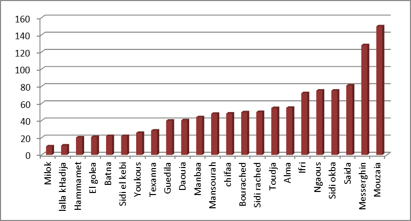
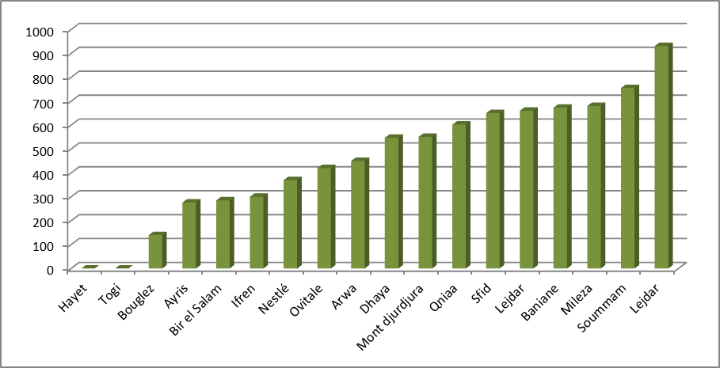
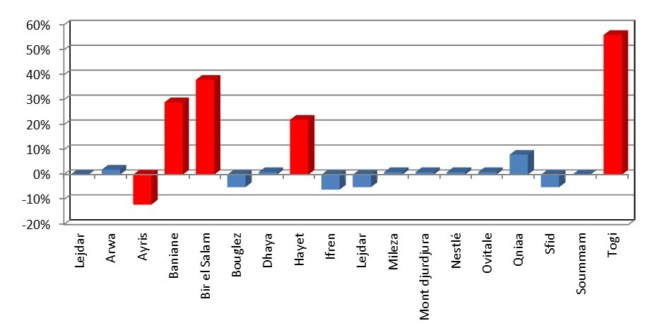
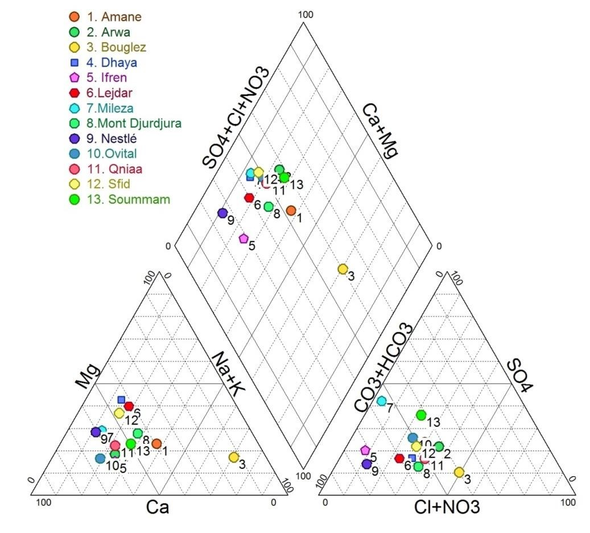
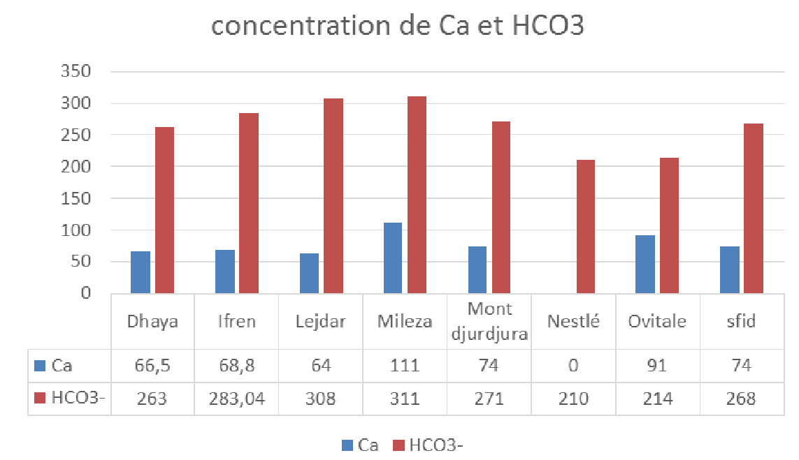
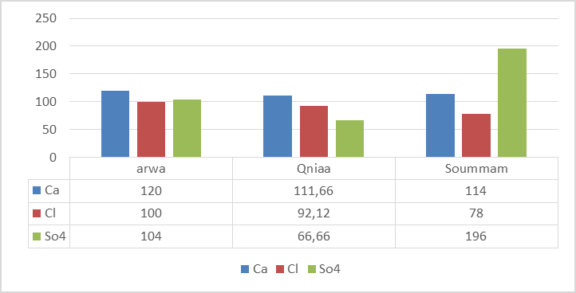
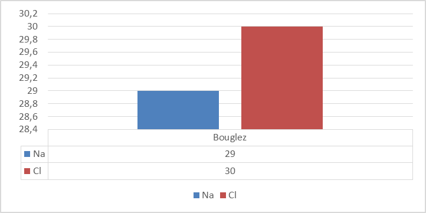
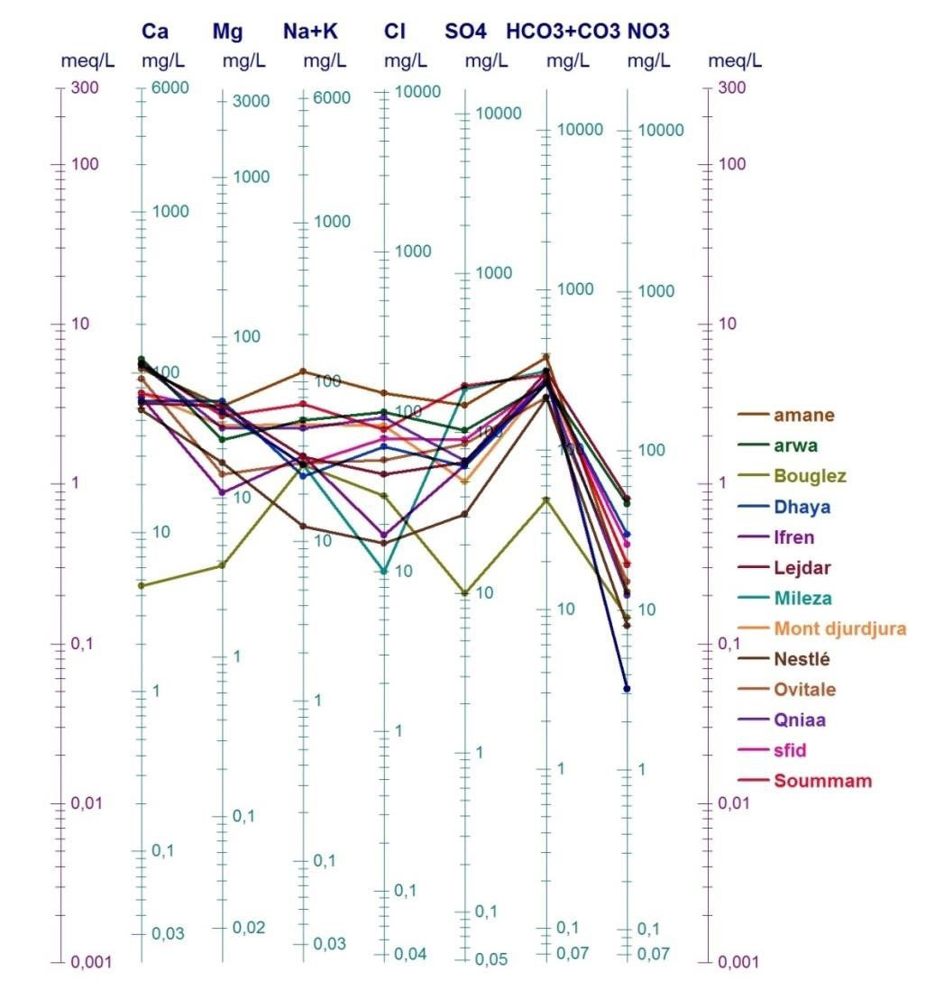

La description d'eau
INTRODUCTION :
Beaucoup d'auteurs ont cherché à donner une définition de "l'eau minérale" :
certains faisaient intervenir la température (mais les eaux minérales ne sont pas
toutes chaudes) ; d'autres le taux de minéralisation (mais certaines d'entre elles
sont très peu minéralisées) ; d'autres encore le mode de gisement ou l'origine de
l'eau. . .
Il est difficile de trouver une définition physico-chimique des eaux dites
minérales rigoureusement acceptable ; la seule admise actuellement est une
définition administrative. Contrairement à celles proposées par les géologues,
cette définition met essentiellement l'accent sur les propriétés thérapeutiques de
ces eaux.
Au sens des derniers textes adoptés, seuls deux types d’eaux destinées au
conditionnement sont définies : l’eau minérale naturelle et l’eau de source.
L’article 2 (alinéa 1) du décret relatif à l’exploitation et à la protection des eaux
minérales naturelles et des eaux de sources donne la définition exacte relative à
chacune de ces eaux (Décret exécutif no 04-196 du 15 juillet 2004).
Ainsi, les eaux minérales naturelles sont définies comme étant des eaux
microbiologiquement saines. Elles se distinguent nettement des autres eaux
destinées à la consommation humaine par leurs natures caractérisées par la
Carte de situation des eaux minérales (source, auteurs)
pureté, et par la teneur spécifique en sels minéraux, oligoéléments ou autres constituants. Ces caractéristiques sont appréciées sur les plans géologique, hydrogéologique, physique, chimique, physicochimique, microbiologique et pharmacologique. Ces eaux minérales naturelles possèdent des propriétés thérapeutiques favorables à la santé humaine. Nous nous proposons dans ce travail de dresser un bilan comparatif des eaux minérales et des eaux de source produites en Algérie.
LA COLLECTE DES DONNEES :
Nous avons voulu traiter toutes les eaux minérales et de source algériennes,
malheureusement, après de multiples démarches auprès des autorités
compétentes, nous n’avons pas pu avoir accès à l’ensemble des données.
Afin de mener à bien notre travail, nous avons été amenés à collecter le
maximum de donnée à partir de l'étiquetage des bouteilles d'eau et les rares
publications. Il s’agit de 23 eaux minérales et de 18 eaux de sources.
 des eaux minérales")
Histogramme du Résidu sec (mg/l) des eaux minérales
Cette étude repose sur des résultats d'analyses de la composition chimique d'eaux minérales, analyses de type classique, c'est-à-dire comprenant le dosage des principaux éléments majeurs: Cations : Ca2+, Mg2+, Na, K Anions : Cl, SO4, HCO3 Aux concentrations des majeurs s'ajoutent : quelques renseignements qualitatifs sur l'existence d'éléments en traces dans l'eau ou de gaz dissous quelques paramètres physiques de l'eau.
CONFORMITE DES RESULTATS D’ANALYSE :
D’après la règlementation en vigueur en Algérie et conformément au journal officiel de la république algérienne N°27 Rabie el aouel 1427 /26 avril 2006, il semble que la totalité des eaux sont conformes aux normes et que leurs concentrations font partie de l’intervalle de valeurs fixé par le législateur. Sauf pour l’eau de source de Lejdar dont la valeur des nitrates est de 50mg/l, ce qui représente la limite supérieure pour cet élément. Nous avons remarqué que les teneurs en éléments chimiques majeurs diffèrent selon la période (analyses de 2011, 2013 et 2016) alors qu’il s’agit d’eaux minérales naturelles qui sont censées avoir une composition constante. Du fait de l'origine très variée de ces analyses, il faut dès maintenant faire des réserves quant aux conclusions qu'on pourra tirer des traitements ultérieurs.
LES EAUX MINERALES :
Avant d’étudier les eaux minérales d’un point de vue hydrochimique, nous avons voulu procéder à une comparaison préliminaire suivant les résultats d’analyse affichés sur les étiquettes des bouteilles. Celle-ci a donné les commentaires suivants :
Le résidu sec :
Le résidu sec représente le taux des éléments minéraux recueillis après l’évaporation d’un litre d’eau à une température de 180°C. Selon les quantités recueillies, elles sont classifiées comme suit : plus de 1500 mg/l : eau riche en sels minéraux ; entre 500 et 1500 mg/l : eau moyennement minéralisée ou oligominérale ; entre 50 et 500 mg/l : eau faiblement minéralisée ; résidu sec 50 mg/l : eau très faiblement minéralisée. La réglementation algérienne recommande une minéralisation qui peut varier entre 1500- 2000 mg/l. Les eaux prises en compte dans le cadre de ce travail montrent une minéralisation qui varie de 152 mg/l (Texanna) à 1280 mg/l (Mouzaia) (figure.2). Ce sont des eaux moyennement minéralisées et de par le résidu sec recommandées pour l’usage quotidien de la famille. Il faut noter que la marque El Golea ne présente pas la valeur du résidu sec.Les bicarbonates :
Les bicarbonates dans les eaux (gazeuses) facilitent la digestion et calment les brûlures d’estomac grâce aux propriétés antiacides du bicarbonate de sodium. De ce fait, les eaux bicarbonatées sont bonnes pour les sportifs pour lutter contre l’acidité produite par le muscle lors de l’effort. Dans le cas des eaux étudiées, les teneurs en bicarbonates varient de 60 mg/l (Texanna) et 671mg/l (Mouzaia) (figure 3). Elles peuvent être classées comme moyennement bicarbonatées. Les teneurs en bicarbonates ne sont pas précisées sur 4 marques : Guedila, Ngaous, Sidi Okba et Toudja.Histogramme des valeurs des bicarbonates en mg/l
Les sulfates :
La législation algérienne préconise une teneur en sulfates entre 200 et 400 mg/l. Lorsque les teneurs sont élevées (plus de 400 mg/l), l’eau est laxative et peut provoquer des diarrhées. A partir de ces teneurs, elle aura un goût «médical» (tendance amère). Elle n'est pas recommandée durant la croissance car les sulfates peuvent interférer avec l'adsorption de calcium et l’inhiber. Les valeurs des sulfates varient entre 7 et 134 mg/l, sauf Sidi Okba qui, par rapport aux autres constituants, est très sulfatée avec une teneur de 445 mg/l, c’est une valeur plus importante que la limite maximale admise (400 mg/l). Lalla Khedidja possède la concentration la plus faible avec 7 mg/l. Les chlorures Les eaux chlorurées ont un effet stimulant sur la croissance et sont indiquées dans le traitement des troubles du développement. La concentration admise des chlorures dans la règlementation algérienne est fixée entre 200 et 500 mg/l. Alors que les réglementations européennes fixent le seuil à 250 mg/l. C'est d'ailleurs à partir de ce niveau de concentration que l'on commence à ressentir le goût de chlore (Javel). Deux marques, Lalla Khedidja et Milok présentent des teneurs très faibles en chlorures (teneurs inférieures à 15 mg/l). L’eau de Messerghine présente une teneur en chlorures égale à 128 mg/l alors que Mouzaia titre à 150 mg/l.
Histogramme des valeurs des sulfates en mg/l des eaux minérales.

Histogramme des concentrations en chlorures en mg/l.
Le sodium Les eaux pauvres en sodium sont conseillées en cas d’hypertension ou de rétention d’eau. Dans les eaux minérales étudiées, les teneurs en sodium ne dépassent pas 63 mg/l, à l’exception de l’eau minérale Daouia qui titre à 75 mg/l et Mouzaia qui titre à 145 mg/l (figure 6).
Histogramme des valeurs du Sodium en mg/l.
CONTROLE DE LA COHERENCE DES ANALYSES :
La méthode de la balance ionique permet de contrôler la qualité des analyses
effectuées sur les éléments majeurs. Cette démarche de validation est un
préalable indispensable à la présentation des résultats d’analyse et à leur
interprétation.
Le calcul des balances ioniques se fonde sur la relation suivante :
BI =
[∑ cations − ∑ anions]
[∑ cations + ∑ anions]
∗ 100
La balance ionique est l’expression d’une différence entre les charges positives
(cations) et les charges négatives (anions). La théorie physique suppose la
neutralité des charges au sein des échantillons d’eau, c'est-à-dire une égalité
entre la somme des charges positives (cations) et la somme des charges
négatives (anions).
L'erreur maximum admise étant fixée à 5 % depuis longtemps ; ce pourcentage
moyen est basé sur la fiabilité des appareils de dosage, les erreurs d'estimation
de l'expérimentateur... ; les méthodes de dosage. L'appareillage s'améliorant de
plus en plus, ce qui donne des résultats de plus en plus précis.
Etude comparative des eaux minérales et des eaux de sources produites en Algérie
327
Tout écart doit ainsi être interprété comme un biais induit lors de l’analyse. En
règle générale, les résultats des analyses sont considérés de la manière suivante :
-1% < BI < 1% : Fiabilité des résultats d’analyses excellente.
-5% < BI < 5% : Fiabilité des résultats d’analyses acceptable.
-10% < BI < 10% : Fiabilité des résultats d’analyses médiocre.
BI < -10% ou BI > 10% : Mauvaise fiabilité des résultats
d’analyses.
La figure 7 et le tableau .3 représentent les balances ioniques calculées sur
chacun des échantillons d’eau minérale. Nous pouvons constater que sept eaux
minérales soit 30,43 % ont une balance ionique inacceptable parce qu’elle est
supérieure à 10% et parfois même supérieure à 60%.
Il est clair que les taux les plus élevés d’erreur appartiennent aux eaux dont un
des éléments majeurs n’a pas été analysé ou ne figure pas sur l’étiquette.
Représentation des balances ioniques calculées
DIAGRAMME DE PIPER DES EAUX MINERALES :
Le diagramme de Piper est utilisé pour définir le faciès type des eaux. Il permet de présenter sur un même schéma un grand nombre d'analyses qui peuvent être comparées visuellement de façon simple. Nous pouvons observer sur le diagramme de Piper une variabilité des faciès chimiques (Fig.8). On distingue trois pôles :• le premier pôle se caractérise par un faciès chloruré calcique et sulfatée calcique pour l’eau de Sidi Rached,
• le deuxième pôle est celui du faciès bicarbonaté sodique, pour l’eau de Daouia,
• et le troisième pôle a un faciès bicarbonaté calcique pour le reste des échantillons d’eau minérale, il est probablement lié à la dissolution des calcaires des réservoirs aquifères,
Diagramme de Piper des eaux minérales produites en Algérie.
Histogramme des concentrations du calcium et des bicarbonates
Diagramme de Schoeller-Berkaloff des eaux minérales
Les concentrations en bicarbonate et en sodium sont les plus importantes concentrations de toutes les eaux minérales, elles sont respectivement de 288 mg/l et de 70mg/l.
DIAGRAMME SCHOELLER-BERKALOFF DES EAUX MINERALES:
L’analyse du diagramme de Schoeller-Berkaloff nous permet de dire que la majorité des eaux minérales retenues présentent des concentrations en éléments chimiques qui varient entre 10 et 100 mg/l, sauf pour les bicarbonates dont les valeurs dépassent largement 100mg/l. Ceci est dû principalement à la nature carbonatée des aquifères. Trois eaux ont une allure différentes des autres ; il s’agit de : • Mouzaia ; qui possède la concentration la plus élevée des eaux minérales en magnésium (75mg/l) et en sodium, potassium et chlorure (150 mg/l). • Lalla khadidja ; Se distingue par le fait qu’elle a les concentrations les plus faibles des eaux minérales en sodium, potassium, sulfate (7.0 mg/l) et chlorure (11 mg/l). • Sidi Rached ; contient une concentration très élevée en calcium (134.38mg/l) et une concentration très faible en magnésium (6.69 mg/l) par rapport aux autres eaux minérales. Il est à noter que les eaux minérales algériennes présentent des concentrations en nitrates qui varient de 0 à 28 mg/l. QUALITE DES EAUX MINERALES Nous allons tenter d’étudier la qualité des eaux minérales à travers deux paramètres qui sont : • les ions chlorures qui renseignent sur la qualité minéralogique des eaux. • et l’élément nitrate, principal indicateur d’une pollution des eaux souterraines. Puis par l’interprétation de la qualité globale sur la base d’une grille simplifiée (Tableau 2). Le tableau 3 montre clairement que la majorité des eaux minérales possèdent une concentration en chlorure inférieure à 200mg/l et une concentration en nitrate largement inférieur à 25, ce qui les classe dans la catégorie « excellente ».
DIAGRAMME DE STIFF:
La représentation de Stiff consiste à construire, pour chaque échantillon, un diagramme sous forme de polygone qui prend une forme géométrique selon la teneur des éléments chimiques considérés (figure 13). La distinction entre les échantillons se base sur la géométrie du polygone qui donne une idée sur les espèces dominantes et la parente chimique. Les cations sont représentés à gauche (Na+ + K+, Ca2+, Mg2+ et Fe2+) et les anions à droite (Cl-, HCO3- + CO32, SO42-, NO3). Le diagramme de Stiff bien qu'étant individuel permet une lecture facile des caractéristiques chimiques de l'échantillon. D’après le diagramme de Stiff, il semble que les eaux les moins minéralisées sont celles de Lalla Khedidja et Sidi El Kebir, et la plus minéralisée est Mouzaia. D’autre part, nous observons la dominance de deux formes géométriques préconisant deux groupes d’eaux minérales :• le premier groupe est celui de Lalla Khedidja, Youkous, Hammamet, Sidi El Kebir, Ifri et Alma,
• et le second groupe comprend Guedila, Chifaa, Manbaa, et Mansourah Cette aspect des formes est probablement due à la nature géologique des aquifères.
LES EAUX DE SOURCE:
De la même façon que pour les eaux minérales, une grande partie des valeurs des concentrations en éléments chimiques des eaux de sources a été obtenue à partir de l’étiquetage des bouteilles. Il s’agit de 18 échantillons. Le résidu sec Les eaux prises en compte dans le cadre de ce travail montrent une minéralisation qui varie de 140 mg/l (Bouglez) à 931 mg/l (Lejdar) et peuvent être classées, dans leur majorité, dans la catégorie des eaux moyennement minéralisées (la marque Togi et Hayet n’ont pas de valeurs du résidu sec).
Histogramme du Résidu sec (mg/l) des eaux de source
Contrôle de la cohérence des analyses:
La figure 15 et le tableau 4, représentant les balances ioniques calculées sur chacun des échantillons d’eau source, montre clairement que cinq échantillons ont une balance inférieure -10 et supérieure à 10. Il faut noter que les bicarbonates ne figurent pas dans l’analyse de Bir Salem, Baniane, Hayet et Togi, ce qui explique le fait qu’ils ont une balance de fiabilité médiocre.
Représentation des balances ioniques calculées
Diagramme de Piper des eaux de source
Le diagramme de Piper fait ressortir trois faciès chimiques (Fig.16) :
Diagramme de Piper des eaux de source.

Histogramme de concentration en calcium et en bicarbonate
• le premier pôle se caractérise par un faciès bicarbonaté calcique pour les échantillons d’eau de sources (Nestlé, Ifren, Lejdar, Mont Djurdjura, Dhaya, Ovitale, Mileza, Sfid). Les concentrations en calcium sont supérieures à 60 mg/l, et les concentrations en bicarbonate sont supérieures de 210 mg/l.
• le deuxième pôle se caractérise par un faciès chloruré calcique et sulfatée calcique pour les échantillons d’eau de sources (Soummam, Arwa, Qniaa,).
• le troisième pôle a un faciès chloruré sodique, l’eau de source de Bouglez.

Histogramme de concentration du sodium et du chlorure de Bouglez Diagramme Schoeller-Berkaloff des eaux de source.

Histogramme des concentrations en Cl, SO4 et Ca (mg/l)
Nous remarquons sur ce graphe l’individualisation de l’eau de Bouglez qui possède la minéralisation la plus faible.
